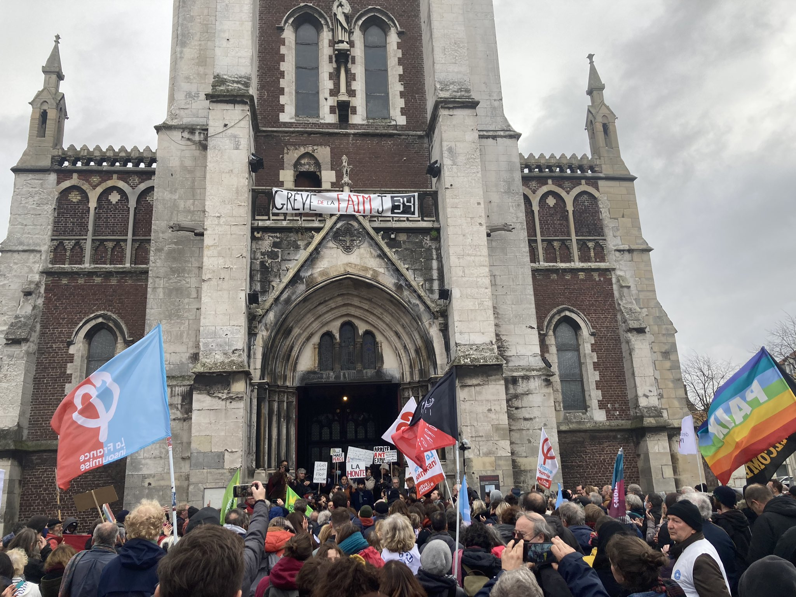

Manifestation en soutien aux personnes exilées et aux grévistes de la faim à Calais

Samedi 13 novembre, une manifestation nationale aura lieu à Calais, en soutien aux
3 revendications portées par Anaïs Vogel et Ludovic Holbein, en grève de la faim
depuis le 11 octobre.
Cette manifestation aura lieu alors qu’Anaïs et Ludovic seront dans leur 34e jour
de grève de la faim. Elle rassemblera les associations calaisiennes engagées depuis
plusieurs dizaines d’années en faveur des droits des personnes exilées et de
nombreuses organisations, citoyen.ne.s et personnes exilées venues de toute la
France, qui ont décidé d’exprimer leur soutien aux revendications des grévistes.
Les organisations mobilisées invitent les citoyennes et citoyens qui le souhaitent
à se joindre au cortège ou bien, s’ils ne peuvent venir à Calais, à exprimer leur
soutien sur les réseaux sociaux avec le #Faimauxfrontieres
La manifestation débutera à 14h devant l’église Saint-Pierre, place Crèvecœur.
Les grévistes de la faim demandent :
• l’arrêt des expulsions et des démantèlements de campements pendant la trêve
hivernale;
• durant la même période, l’arrêt sans condition de toute confiscation des tentes
et des effets personnels des personnes exilées;
• l’ouverture d’un dialogue citoyen raisonné entre autorités publiques et
associations non mandatées par l’État, sur l’ouverture de points de distribution
de tous biens nécessaires au maintien de la santé des personnes exilées.
Liste des associations et organisations appelant à cette manifestation:
Auberge des migrants, Calais Food Collective, Collectif Faim aux frontières,
Collective Aid, Human Rights Observers, La Cabane Juridique, Project Play,
Refugee info bus, Salam, Shanti, Utopia 56, Woodyard.
Photo : Julia Druelle